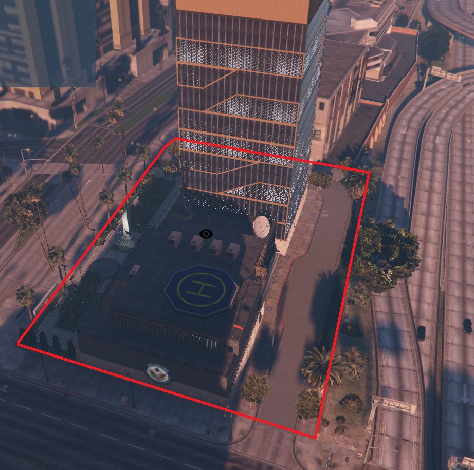
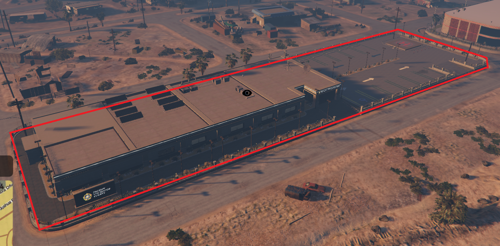
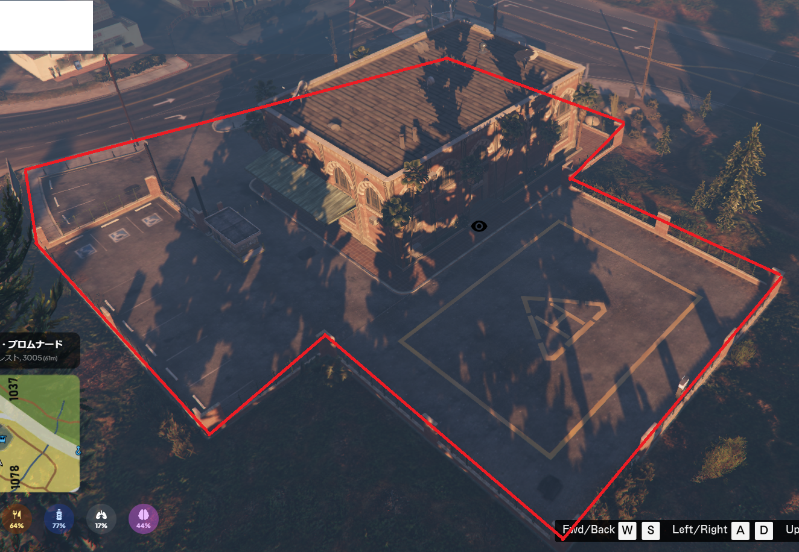

街のみんなが気持ちよく遊ぶための、ライトRPとマナーの約束。検索やカテゴリーから必要な項目を確認できます。
最終更新 2026-11-16
最初に押さえたい約束を確認し、必要なルールの本文へ進めます。
相手の楽しみも大切に — 市民、運営、配信者など、一緒に遊ぶ相手を尊重しましょう。
1人につき1キャラクター — NicoGuraで使用できるキャラクターは、1人のプレイヤーにつき1人までです。
ゲーム外の情報をRPに持ち込まない — 自分のキャラクターがゲーム内で知ることのできない情報を、ゲーム内で使うことは禁止です。
チート・不正ツールを使わない — チート・不正ツール・マクロで有利になる行為や、サーバー・他のプレイヤーを妨げる行為は禁止です。
バグ・複製を意図的に悪用しない — 複製バグや、通常のプレイでは到達・発揮できない挙動を悪用することは禁止です。
理由のない攻撃をしない（RDM） — RP上の理由や流れがないまま、他のプレイヤーを突然攻撃・殺害する行為は禁止です。
車を使って故意に襲わない（VDM） — RP上の理由なく、車両を武器のように使って他のプレイヤーを意図的に轢く行為は禁止です。
犯罪カテゴリ・参加人数 — 犯罪者側とPD側は、分類ごとの参加人数に従ってください。大型犯罪はギャング限定です。
中籠りと完全包囲の判定 — PDラジアルで完全包囲を宣言した時点から5分を計測し、ラークの介入は禁止になります。PDが5回程度呼びかけ、5分後に条件を確認して犯罪者側の敗北を確定します。
職業の権限や請求を悪用しない — 職業の権限・支給品・専用機能の悪用や、実施していない作業の請求は禁止です。
緊急救済機能を悪用しない — 緊急救済は、EMS不在・救助不能などの場合や、EMS・PDから指示がある場合に利用してください。
セーフゾーンでの禁止行為と通過 — セーフゾーン内での発砲・犯罪行為は禁止です。チェイスの経路として通過することはできます。
立場にかかわらず、街で遊ぶ全員に共通する約束です。
街の規定
RP上の対立や口論と、プレイヤー本人への攻撃は別です。ゲーム内で役として対立しても、現実の人格への誹謗中傷や嫌がらせにつなげないでください。
相手が話したり行動したりできる余地を残し、自分と相手の両方が楽しめる遊び方を心がけましょう。RPとして成立するゲーム内の対立まで、一律に禁止するものではありません。
キャラクターとして街で経験したことをもとに、会話や行動を楽しんでください。操作ミスや言い間違いがあっても、すぐに相手を責めず、必要なことを短く確認し合いましょう。
相手の会話や出来事を尊重し、関係のない場面へ繰り返し割り込んで遊びを止めないようお願いします。困ったときは、運営へ相談して大丈夫です。
「そのRPは間違っている」「もっとキャラになりきれ」と、自分のRP観を他人へ押し付けることは避けてください。経験や遊び方には違いがあります。
困ったことは短く確認し、相手を責めるためにシーンを止め続けないようお願いします。ルールに関わる問題は運営へ相談してください。
NicoGuraで使用できるキャラクターは、1人のプレイヤーにつき1人までです。複数キャラクターや別アカウントを使い分けて、実質的に複数のキャラクターを使用することはできません。
Whitelistの申請には、本人がFiveMへ初回接続したときに表示されるRxxxxコードを使ってください。他人のコードは使用できません。
Discordでルールを確認し、市民ロールを取得した後、#ホワイトリスト申請へ本人のコードを投稿してください。運営の承認後に、FiveMへ再接続します。
問題がある場合は、公式Discordのチケットから相談してください。詳しい手順は「NicoGuraへの参加方法」を確認してください。
チート、不正ツール、マクロなどを利用して、自分が有利になる行為は禁止です。Mod Menu、Aimbot、ESP、Wallhackなどの不正な照準・透視・改変も含みます。
これらを使ったサーバーへの攻撃や、他のプレイヤーのプレイを妨げる行為は禁止です。放置、BOT、自動化によって稼ぐ行為も行わないでください。
資金・アイテム・報酬を複製したり、不正に取得したりする行為は禁止です。通常のプレイでは到達・発揮できない行為や挙動も悪用しないでください。
不具合に気づいたら追加利用を止め、発生時刻や状況をチケットで報告してください。複製や重大な脆弱性の再現方法は公開・拡散しないでください。
偶然の不具合や操作ミスと、故意の悪用は区別します。
Citizen・Client側MODは原則禁止です。例外的に使用を認める場合があるため、使用前に公式Discordのチケットで運営へお問い合わせください。
軽量化や見た目・音の変更であっても、自己判断で使用できる例外にはなりません。導入したいMODの内容を伝え、運営の回答を確認してください。
現実のお金や換金できる対価と引き換えにゲーム内資産を受け渡したり、取引を持ちかけたりしないでください。
正規の承認や処分を、別アカウントや不正な手段で回避しないでください。承認や処分について確認したいことがある場合は、Discordの「お問い合わせ窓口」へ連絡してください。
事実確認のため、起きたことを分かる範囲で正確に伝えてください。証拠がないことや記憶が曖昧なことは、そのまま説明して大丈夫です。
状況を確認できるよう、ボディカメラで記録を残すことを推奨します。録画の有無や記憶が曖昧な点は、そのまま説明してください。
防弾性能のある服装の着用は禁止です。見た目ではなく、防弾性能を持つ服装が対象です。
この規定は服装の防弾性能を対象とします。通常のアーマーアイテムの使用を禁止するものではありません。
Discord、配信、他人の画面、ゲーム外チャット、運営画面、外部ツールなどで得た位置・人数・計画・身元を、自分のキャラクターが知っている情報として利用しないでください。
偶然情報が見えたり聞こえたりした場合も、ゲーム内の行動や仲間への連絡に利用しないでください。ゲームの状況に影響しない普段の雑談まで禁止するものではありません。
犯罪、警察対応、戦闘、チェイス、ギャング活動などで、Discord等の外部VCを使って位置・人数・作戦・敵情報を共有し、ゲーム内で有利になる行為は禁止です。
Discord等で友達同士が普通に会話すること自体は禁止しません。雑談中にシーンの情報が入っても、ゲーム内の行動や仲間への指示に利用しないでください。
通りすがりの人へ無差別に発砲するなど、RP上の関わりがない攻撃をしないでください。「犯罪者のキャラクターだから」という理由だけで、誰でも攻撃できるわけではありません。
進行中の犯罪RPや対立は、前後のやり取りと状況を含めて判断します。
人を狙って轢く、嫌がらせのために繰り返し体当たりをするなどの行為をしないでください。
普通の交通事故をVDMとして扱うものではありません。故意かどうかや前後のRPの流れを含め、状況を確認します。
通常のプレイでは到達不可能な行為や、シーン中にロード・テレポートを挟む場所へ侵入する行為は禁止です。
相手とのやり取りでは、結果を一方的に押し付けず、相手が反応できる余地を残してください。
嫌なことがあっても、仕返しや長時間の口論を続けず、距離を取って運営へ相談してください。ゲーム内、配信、SNSでも、相手本人を尊重しましょう。
RPとして成立するキャラクター同士の対立と、プレイヤー本人への攻撃は区別します。
運営、PD・EMSなどの公務員、他のプレイヤーへのなりすましは禁止です。権限があると偽って従わせたり、本人の指示や本人確認を装ったりしないでください。
セーフゾーン内では、銃の発砲や犯罪行為は禁止です。
チェイス中に、経路としてセーフゾーンを通過することはできます。ただし、通過中もセーフゾーン内での発砲・犯罪行為は禁止です。
PD・EMS専用車両を、権限のない市民が無断で使用・窃盗する行為は禁止します。
PD・EMSの緊急車両や公務用車両を、単なる移動手段として無断利用することも禁止です。
PD・EMS・タクシー・バスなど、JOB専用として用意されている車両を犯罪行為に利用することは禁止します。
対象は、JOBの業務用として用意された専用車両です。通常の市販車や個人所有車まで、このルールで一律に禁止するものではありません。
車両に乗ったときに「犯罪禁止車両」と表示される車両を、犯罪に利用することは禁止です。
PD・EMS・メカニックなど、職務の権限、支給品、専用機能を不正な利益のために悪用しないでください。
実施していない作業の請求や、意図的な詐欺的請求は禁止です。作業・商品と請求内容が食い違わないよう説明してください。
店舗荒らし、意図的な営業妨害、嫌がらせは禁止です。行き違いを解決できない場合は、チケットから運営へ相談してください。
公務員は兼業禁止です。就職や採用については、担当者の案内を確認してください。
メカニックは準公務員ですが、中型犯罪まで参加できます。
ギャングへの参加と、大型犯罪への参加は禁止です。
店舗に在籍できる人数は、店長1人・従業員5人の合計6人までです。
配信する際は、他の参加者の個人情報や私的な画面が映らないよう注意してください。
自衛のため、名前に「🛰」マークを表示してください。犯罪中は、マークを消しても構いません。
ゲーム内の対立を、現実の人格への攻撃やSNSでの粘着につなげないでください。配信から得た位置や作戦をゲーム内で利用することも禁止です。
街中で運営に対する必要のないメッセージや電話を送ることは避けてください。
Discordでは、運営・サポーター・デバッガーなどへのDMを行わず、案内された窓口を使ってください。
ゲーム内の報告機能やチケットで報告した内容を、重複して報告しないでください。
ルール違反や、他のプレイヤーのプレイ・RP活動・サーバー運営の妨げになると判断した場合は、警告、キック、期限BAN、永久BANなどの対応を行う場合があります。
個別に書かれていない行為でも、悪質な抜け穴利用や活動の妨害には運営が対応する場合があります。
これらの対応は、本人へ事前に通知せず行う場合があります。
準備から交渉・逃走・終了・罰金まで、犯罪に必要な公開ルールをまとめて確認できます。
犯罪は表の人数の範囲内で行ってください。犯罪者側の人数とPD側の人数を混同しないようにしてください。
利用案内
参加人数は「犯罪カテゴリ・参加人数」で確認してください。この一覧は分類の案内です。現在の受付状況は、ゲーム内の案内を確認してください。
定期再起動の30分前から再起動まで、およびサーバー再開後30分間は、犯罪行為を禁止します。新たな犯罪の開始だけでなく、この時間帯に犯罪行為を続けることも禁止です。
再起動時間をまたぐ可能性が高い犯罪も行わないでください。開始できる時刻でも、再起動前の犯罪禁止時間にかからないか、事前に確認しましょう。
緊急再起動の場合は、サーバー再開後15分間、犯罪行為を禁止します。緊急再起動は予告なしに発生する場合があります。
メンテナンス、臨時再起動、特殊な再起動等については、街からのアナウンスを確認してください。
運営から個別の犯罪開始時刻が案内された場合は、その案内を優先してください。最新情報は公式Discordの「街からのお知らせ」等で確認できます。
社会奉仕・保護観察の期間中は、犯罪などが制限されます。参加できる活動と適用期間を確認し、制限に従ってください。
別のアカウントや立場を使って制限を回避しないでください。自分に適用される内容が分からない場合は、PDや運営へ確認してください。
メカニックの犯罪参加とギャング（共通の本文）
犯罪を始める前に、警察署の前で待機する行為は禁止です。
犯罪RPはNicoGuraのゲームコンテンツです。街の仲間と計画し、警察とのやり取りやシーンを楽しみましょう。
PD・EMS専用車両を無断で使用・窃盗しない（共通の本文）
JOB専用車両を犯罪に利用しない（共通の本文）
犯罪禁止車両を犯罪に利用しない（共通の本文）
犯罪シーン中にクルーズコントロールを使用することは禁止です。
PD側は、犯罪者側のヘリ台数に1台を加えた台数まで使用できます。
密輸バージ・空母襲撃・海上油田・貨物船強盗は、通常の分類より3台多い上限です。表の台数は1事件の最大台数であり、犯罪者側はこの上限を超えないでください。
犯罪時は、車両のメインカラーと服装の色を揃えてください。盗難車を使う場合も同じルールが適用されます。
近似色や、黒・白・グレーの使用は認められません。カラーの判断に迷う場合は、犯罪を始める前にPDへ確認してください。
ギャングカラーは設立時に運営へ登録してください。ギャング内のメインカラーは統一してください。
他ギャングの登録カラーを意図的に偽装したり、他ギャングになりすましたりしないでください。既存ギャングと識別しにくい色や、PD・EMSなどと誤認しやすい表現は避けてください。
犯罪シーン中は、登録カラーの有無にかかわらず、犯罪シーンのカラー統一規定に従ってください。
防弾性能のある服装は禁止（共通の本文）
人質の解放条件として要求できる内容は、最大2項目までです。人質がNPCでもプレイヤーでも、条件は変わりません。
要求によってチェイスそのものが成立しなくなる場合などは、PD側が要求を断ることができます。ルールだけを機械的に適用せず、お互いが楽しめるよう、その場の雰囲気や状況を大切にしてください。
この時間を超える要求はできません。ただし、クレーン強盗はアタック禁止時間に加えて2分まで要求できます。
PDは、犯罪現場周辺にいる住民に職務質問を行うことができます。職務質問を受けた方は、応じる必要があります。
PDが犯人を一度見失った場合でも、見失ってから10分以内であれば、現行犯として逮捕することができます。
セーフゾーンでの禁止行為と通過（共通の本文）
ランドリー、ヴァンジェ、パレト、ヒューメイン、ボブキャット、美術館、カジノ、ユニオン、地下、山岳。
PDは現場を完全包囲したうえで、宣言の操作を行います。
PDラジアルメニューの「完全包囲」から宣言します。宣言した時点から5分の計測を開始します。
完全包囲を宣言した時点から、その犯罪へのラークの介入は禁止です。
計測中、PDは犯罪者側へ5回程度の呼びかけを行います。
宣言から5分が経過したら、PDが完全包囲・呼びかけ等の条件を確認したうえで、犯罪者側の敗北を確定します。
犯罪参加者の画面中央上部に残り時間を表示します。5分経過後は「PD確認待ち」となります。時間到達だけで自動的に敗北が確定するわけではありません。
PDを振り切ってから5分が経過すると、犯罪シーンの終了とみなします。
PDが犯人を見失ってから10分以内の現行犯逮捕については、「すべての犯罪で有効な対応」も確認してください。シーンの終了と現行犯逮捕の条件は別に定めています。
ダウンから蘇生・復帰した後、同じ戦闘へ戻って再参加する行為は禁止です。治療や身柄の扱いは、その場の案内に従ってください。
クラッシュからの再接続は、ダウンからの復帰と区別します。再開方法が分からない場合は運営へ相談してください。
自分がダウンしている間に戦況を共有し、生きている仲間を有利にしないでください。ゲーム内の会話や無線、外部VCなど、連絡手段にかかわらず同じです。
RP上自然な会話まで完全に禁止するものではありません。復帰直後に同じ戦闘へ戻ることについては「ゾンビ行為をしない」を確認してください。
警察対応、犯罪、戦闘、交渉、その他進行中のRPの結果を避けたり、不利な状況をリセットしたりする目的で、故意に退出・切断しないでください。
クラッシュ、回線落ち、FiveMエラーなどの不可抗力は区別します。可能であれば再接続してRPを続け、関係者へ状況を伝えてください。戻れない場合は、可能になった時点でDiscordの「お問い合わせ窓口」へ連絡してください。
当事者とゲーム内での関わりがない場面へ、ゲーム外の情報を頼りに加勢したり、無関係な攻撃で結末を変えたりする行為は禁止です。
通りかかること、通常の通報や救護まで一律に禁止するものではありません。助けに入るときは、その場の安全とゲーム内での関わりを確認してください。
不具合などで犯罪の進行が不可能になった場合は、速やかにPDへ連絡し、シーンを一時中断してください。
PDが現場へ向かい、不具合の状況を確認したうえで、リセットできるか判断します。
進行不能と判断された事件では、状況確認のために犯罪者側へボディカメラの提出を求める場合があります。
不具合リセットを行う前に、PDは犯罪者側へ今後の進行を確認してください。犯罪者側は、次のいずれかを選択します。
不具合リセット後、同じ犯罪を最初から再度実行します。この選択をした場合は、必ず同じ犯罪を実行してください。
その犯罪を中断します。中断後は、他の犯罪者が同じ犯罪を実行できる状態にしてください。
一度リセットして再実行した後に再び不具合が発生した場合は、②そのまま続行・③中断のどちらかを選択してください。
2回目以降は、再度リセットして最初からやり直す選択はできません。
不具合があった犯罪の成功後に補填を申請する場合は、チケットを発行し、ボディカメラを提出してください。ボディカメラの提出がない場合は補填できません。
報酬が二重に取れた場合や、本来の挙動と異なる結果になった場合は、追加利用を止め、チケットでお問い合わせください。事実を隠さないでください。
報酬や進行を不正に重複させたり、失敗や制限を不正なリセットで消したりする行為は禁止です。
PDの確認を受けた正規の不具合対応は、不正なリセットと区別します。「犯罪中の不具合対応・再実行・補填の手順」を確認してください。
犯罪時に武器を所持していた場合は、銃刀法違反の対象になります。罰金と保護観察時間は「ゲーム内法律・基本罰金と保護観察」を確認してください。
武器を使う場面でも、RP上の理由のない攻撃や殺害は禁止です。
ゲーム内法律
ゲーム内の犯罪には、PDによる対応、罰金、保護観察、押収、インパウンドなどがあります。サーバールール違反に対する運営の対応とは区別します。
適用された罪状、金額、保護観察時間はPDの説明を確認してください。表の「—」は時間や補足の指定がない欄で、独自の時間を補うものではありません。
プレイヤー本人へのハラスメントなどは、サーバールール違反として運営が対応する場合もあります。
回収区分と料金を確認して手続きを進めてください。
警察署に対して、武力または車両などを用いて攻撃し、警察業務などを妨害する行為を、警察署襲撃とします。
本署・砂漠署・北署の対象範囲は、以下の赤枠を確認してください。



NicoGuraには、プリズンに代わる、拘束されない社会奉仕活動の制度があります。期間中は犯罪などが制限されます。
適用された期間や制限の内容は、PDの説明を確認してください。罪状ごとの保護観察時間は「法律と罰金」で確認できます。
ゲーム外の情報をRPに持ち込まない（共通の本文）
外部VCで有利な情報を共有しない（共通の本文）
理由のない攻撃をしない（RDM）（共通の本文）
車を使って故意に襲わない（VDM）（共通の本文）
パワーゲーミングをしない（共通の本文）
チート・不正ツールを使わない（共通の本文）
バグ・複製を意図的に悪用しない（共通の本文）
Citizen・Client側MODの使用条件（共通の本文）
悪質な嫌がらせをしない（共通の本文）
運営や他のプレイヤーになりすまさない（共通の本文）
証拠を捏造しない（共通の本文）
配信・SNSでも相手を大切に（共通の本文）
PDの公開ルールと、犯罪対応・判定・処分に必要な共通規定です。
PDは、内部ルールを厳守してください。
職業の権限や請求を悪用しない（共通の本文）
公務員の兼業禁止（共通の本文）
犯罪カテゴリ・参加人数（共通の本文）
犯罪の種類と分類（共通の本文）
犯罪シーンのヘリ台数（共通の本文）
犯罪シーンではカラーを揃える（共通の本文）
犯罪シーン中の共通ルール（共通の本文）
犯罪シーン中のクルーズコントロール禁止（共通の本文）
再起動前後の犯罪について（共通の本文）
犯罪前に警察署の前で待機しない（共通の本文）
チェイス犯罪で有効な対応（共通の本文）
チェイス犯罪のアタック禁止時間（共通の本文）
すべての犯罪で有効な対応（共通の本文）
中籠りと完全包囲の判定（共通の本文）
犯罪シーンが終了する条件（共通の本文）
ゾンビ行為をしない（共通の本文）
ダウン中に戦況を伝えて有利にしない（共通の本文）
シーンから逃れるために退出しない（共通の本文）
関係のないシーンを不正に壊さない（共通の本文）
犯罪中の不具合対応・再実行・補填の手順（共通の本文）
Heistの重複・リセットを悪用しない（共通の本文）
ゲーム内犯罪は、PDによる対応、罰金、保護観察、押収、インパウンドなどの対象になります。犯罪RPをすること自体は街のコンテンツです。
PDはゲーム内法律に基づく罪状と処分を説明してください。市民も、罪状・請求額・保護観察時間が分からないときは、説明を求めて大丈夫です。
罪状別・Heist分類別の罰金と保護観察は「ゲーム内法律・基本罰金と保護観察」で、インパウンドの料金と待機時間は「インパウンド」で確認できます。サーバールール違反は運営対応の対象です。
銃刀法違反の適用条件（共通の本文）
ゲーム内法律・基本罰金と保護観察（共通の本文）
インパウンドの回収料金と待機（共通の本文）
警察署襲撃の定義と対象範囲（共通の本文）
案内された参加制限を確認しよう（共通の本文）
社会奉仕活動について（共通の本文）
EMSの公開ルールと、救護・復帰・救済機能の扱いをまとめています。
EMSが不在の場合や救助が不可能な場所にいる場合など、緊急時に利用する救済機能を悪用することは禁止です。EMSやPDから指示がある場合も利用できます。
移動と蘇生は別の機能です。利用するときは、各機能の条件と画面の案内を確認してください。
ダウン画面でGキーを押すと救護要請を送れます。キー割り当てを変更している場合は、対応するキーを使ってください。画面の受付通知を確認しましょう。
EMSは治療・蘇生・搬送・救急対応を担当します。現場の安全確認が必要なこともあるため、案内を待ち、分かる範囲で状況を伝えてください。
ダウン中で銀行残高から料金を支払える場合は、EMSの勤務人数にかかわらず /help で有料の救急処置を依頼できます。利用方法と料金は「緊急時の搬送と救済コマンド」を確認してください。
EMSは治療、蘇生、搬送、救急対応、整形などを行います。現場の安全確認が必要な場合もあるため、案内に従ってください。
医療サービスの種類や料金が分からない場合は、担当者へ確認してください。
救護機能の利用条件と、復帰後の戦闘再参加に関するルールも確認してください。
NPC治療・院内NPC蘇生と、現場で依頼する /help は別のサービスです。利用するサービス名と料金を確認してください。
対応内容や場所が変わる場合は、担当者に内容と料金を確認してください。利用方法はゲーム内の案内に従ってください。
包帯は一時的に出血を抑え、鎮痛剤は痛み・症状を一時的に緩和します。完治ではなく、時間がたつと症状が再発する場合があります。
IFAKは体力を25％回復する応急処置用品です。怪我や症状を完全に治療するものではありません。
怪我・出血・症状を完治させるには、EMSによる治療を受けてください。症状がある場合は、EMSへ相談してください。
救助が困難な状況などで /tpems を使用するときは、利用理由を記入してください。記入した理由は運営が確認します。
/tpems は病院へ移動する機能です。蘇生や体力回復は行いません。移動後は、EMSや利用可能な治療の案内を確認してください。
/help は /tpems とは別の機能です。ダウン中で銀行残高から料金を支払える場合に、有料の救急処置を依頼できます。EMSが勤務中でも利用できます。EMSへの救護要請は、引き続きダウン画面から送れます。
車内や拘束・収監中でも救急処置を依頼できます。手錠や収監などの状態が解除される機能ではありません。道路へ安全に移動できない場合は、その場で処置します。NPCを安全に配置できない場合や救助が重なった場合も、NPCの到着を待たずに処置を受けられます。画面の案内を確認してください。
/help の料金は「医療サービスの料金」で確認できます。病院受付NPCで受ける治療・蘇生とは別のサービスです。
緊急救済の悪用は禁止です。EMS・PDから指示がある場合も、機能自体の利用条件に従ってください。
公式Discord / 公式X
検索・保存機能にはJavaScriptを有効にしてください。